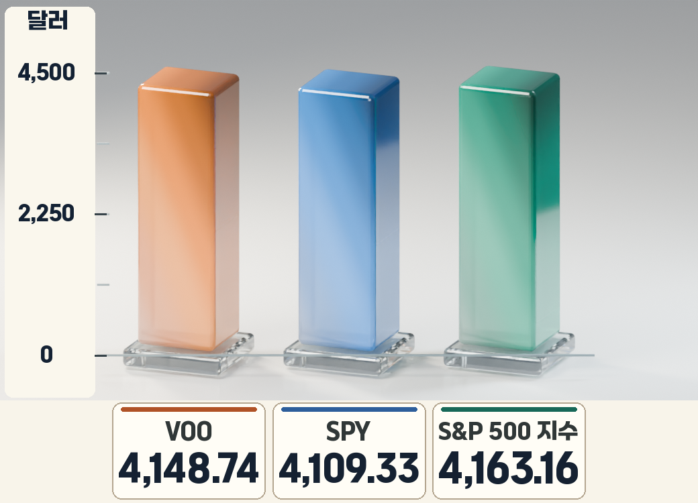

같은 지수인데
10년 뒤엔 39.41달러
차이 났어!
10년 뒤엔 39.41달러
차이 났어!
공시 성적표는 여기.
우리 체결가·환율은
영수증에서 보자.
우리 체결가·환율은
영수증에서 보자.
영수증에서 맞춰 볼 것
같은 기간 시작일과 종료일
같은 성과 기준 달러·NAV·분배 재투자
내 결제 내역 체결가·환율·거래비용
2016.09.30–2026.09.30 · 공시 달러 NAV 총수익률로 계산

분배금 재투자 · 펀드 비용 반영 · 개인 세금·환전·거래비용 제외
지수 막대는 비교 기준 · 공시 연율로 계산한 잔액은 근사값
같은 기간 시작일과 종료일
같은 성과 기준 달러·NAV·분배 재투자
내 결제 내역 체결가·환율·거래비용